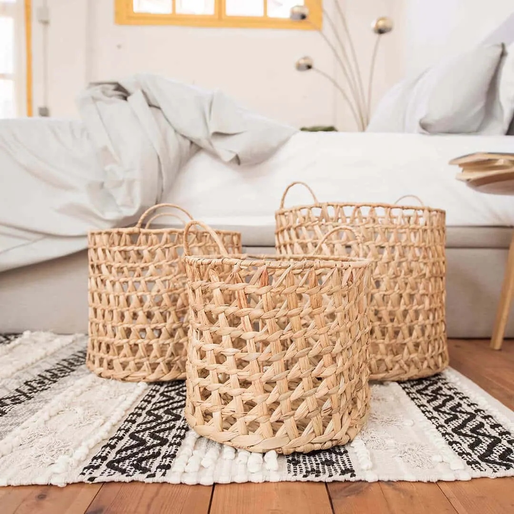

Pon orden en tu dormitorio y ahorra espacio

El orden y la organización dirigen nuestras intenciones, orden con la alimentación, orden en nuestra cuenta corriente, mantener a raya la grasa corporal… en definitiva, aspiramos al ambicioso objetivo de una vida más organizada después del verano. Realmente lo ideal es marcarse metas a corto plazo igualmente productivas, cuya consecución proporcionan una satisfacción inmediata. Que año tras año tus intenciones queden en agua de borrajas, te lleva al otro extremo de lo que pretendías, a un amargo sentimiento de frustración.
Empezar a organizar los espacios de nuestro hogar, es un gran logro. Una buena estrategia puede ser empezar de “dentro hacia afuera”, pasitos seguros en el camino del éxito personal. Podemos empezar por los dormitorios, lugares tan íntimos y personales que resultan un reflejo y casi una extensión de nosotros mismos.
¿Por qué es importante organizar bien el dormitorio?
Conseguir mantener organizado el dormitorio todo el año puede llenarte de satisfacción: ese espacio se convierte realmente de un oasis de calma, el orden lleva a la armonía y el equilibrio a la paz; el desorden en todos los aspectos aumenta el estrés y la ansiedad.
Dejando a un lado el rollo “místico”, a efectos prácticos organizando los dormitorios se consigue ampliar espacio (sobre todo si son dormitorios pequeños). Además, ganarás tiempo si tienes todo localizado y te será más fácil mantener limpio el cuarto.
¿No puedes tú solo? Busca un organizador profesional.
Algunos son incapaces de afrontar la tarea faraónica de organizarse; existe una profesión poco conocida, aunque cada vez más en boga, son los organizadores de espacio. Entre sus funciones destacan las de enseñar a usar correctamente el espacio e incluso a barajar otras alternativas de uso, inéditas cuando estos fueron diseñados.
Su visión del orden es mucho más amplia que la del resto de mortales, considerándolo un estado mental estrechamente relacionado en el orden físico de nuestro hogar.
Ideas prácticas para aprovechar el dormitorio
El equipo de organizadores profesionales de AorganiZarte, coinciden en que la organización del dormitorio es una etapa necesaria en el camino del orden y nos ofrecen una serie de consejos básicos para iniciarnos:
- En un primer momento, hay que repasar TODO lo que hay en el dormitorio. Hay que establecer en este punto prioridades (“¿qué me sirve y qué no”?) y tomar decisiones drásticas: donar, tirar… Además, empezarán a aparecer objetos que no pertenecen al dormitorio, productos de cosmética e higiene, vasos…etc. Llévalo todo a su sitio.
- Mención especial para la mesita de noche, que siempre debe albergar un espacio de almacenaje para tener sólo lo imprescindible que utilices, al acostarte o al levantarte.
Ordenar la ropa
Empieza lo peliagudo, lidiar con la ropa. Una vez más, AorganiZarte apela al sentido común: “Es fundamental que la indumentaria que nos quitamos cada día, la guardemos de inmediato. Si hay que lavarla, hay que ponerla directamente en el lugar dónde ponemos la sucia. Si puedes volver a ponértela, cuélgala de nuevo”. Nada de acumular montañas de prendas en una silla.
Un truco para organizar la ropa tanto sucia como limpia es utilizar cestas de diferentes tamaños, tanto en el interior de los armarios como ocupando algún rincón del dormitorio. Las cestas de este modo cumplirán una doble función, la de organizar y además decorar.
¿Y la ropa difícil de doblar? Estamos pensando especialmente en las sábanas, he aquí un excelente truco de doblado desde AorganiZarte:
Y nos sugieren “mantener esa rutina cada mañana: cinco minutos son suficientes para dejar el dormitorio a punto.” Si te centras en ello, son solo cinco minutos, pero ganarás una sensación de bienestar que te hará sentir muy bien para empezar el día.
Hacer la cama todos los días
Lo peor, entrar en el dormitorio y ver la cama sin hacer; por eso debes marcarte el pequeño reto personal de hacer la cama por la mañana antes de salir de casa.
Y hablando de camas, estas no son sólo para dormir, como apuntan los profesionales de AorganiZarte: “El espacio de detrás, debajo y en el cabecero pueden ser lugares estupendos de almacenaje. Bajo la cama puede ser un lugar perfecto para guardar cosas que no utilices habitualmente como la ropa de otra temporada, zapatos que sólo usas de vez en cuando, …”
La solución para aprovechar el espacio de debajo de la cama es (y aquí Lo Monaco aporta su granito de arena), el canapé abatible.
Cómo organizamos un canapé abatible
Ya se ha apuntado, el canapé abatible es un espacio complementario al armario y además no ocupa sitio ahora bien, no caigamos de nuevo en el mismo error, no conviertas el canapé en un cajón de sastre. El canapé abatible también tiene su propia organización; algunos trucos:
-Guardar todo en cajas (por supuesto por categorías) debajo de la cama, con etiquetas descriptivas sobre lo que puedes encontrar en su interior.
-Cada cierto tiempo, revisa el interior para ver si lo que contiene te sigue interesando.
Finalmente, desde AorganiZarte, nos recomiendan hacer una limpieza general de la habitación: techos, suelos, puertas, cortinas. Satisfacción garantizada, ¿a qué ahora tu dormitorio es más hogar?